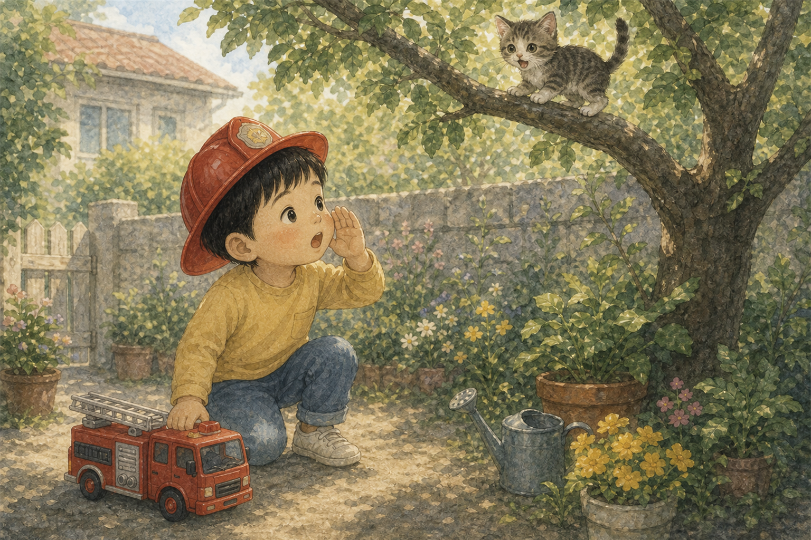
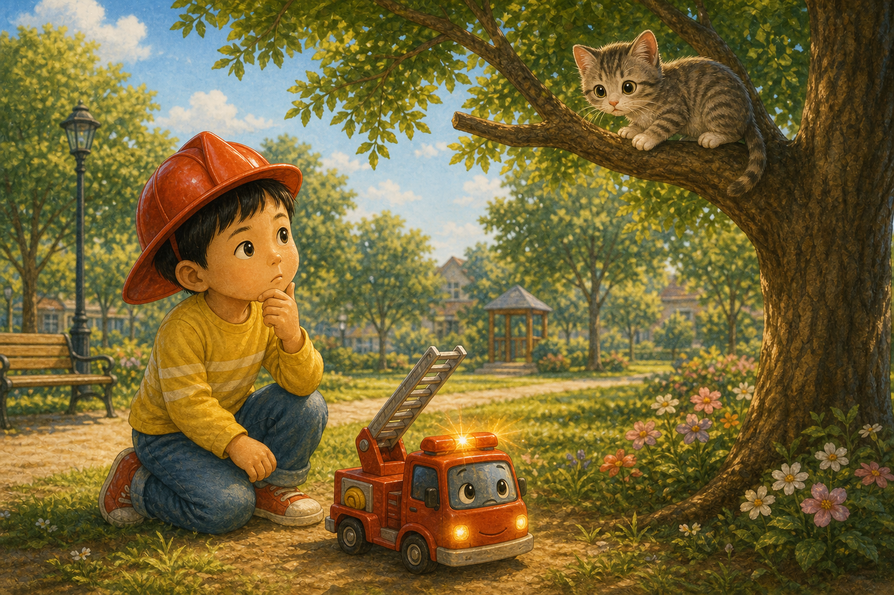
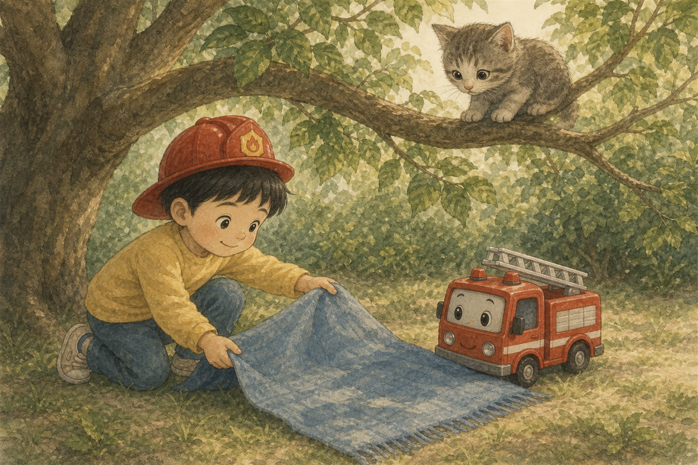
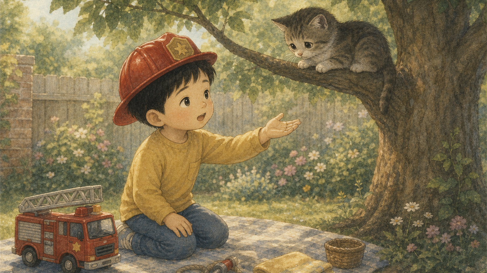
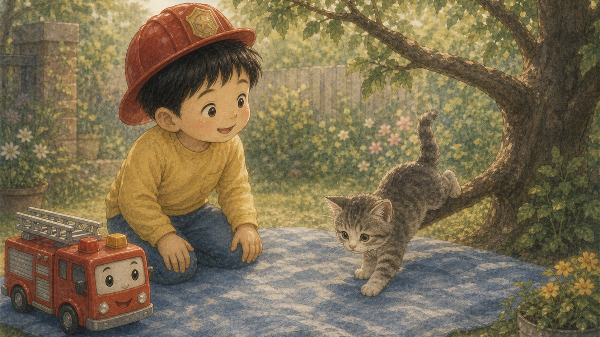
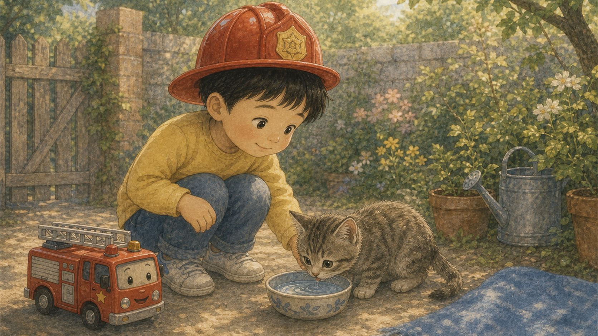
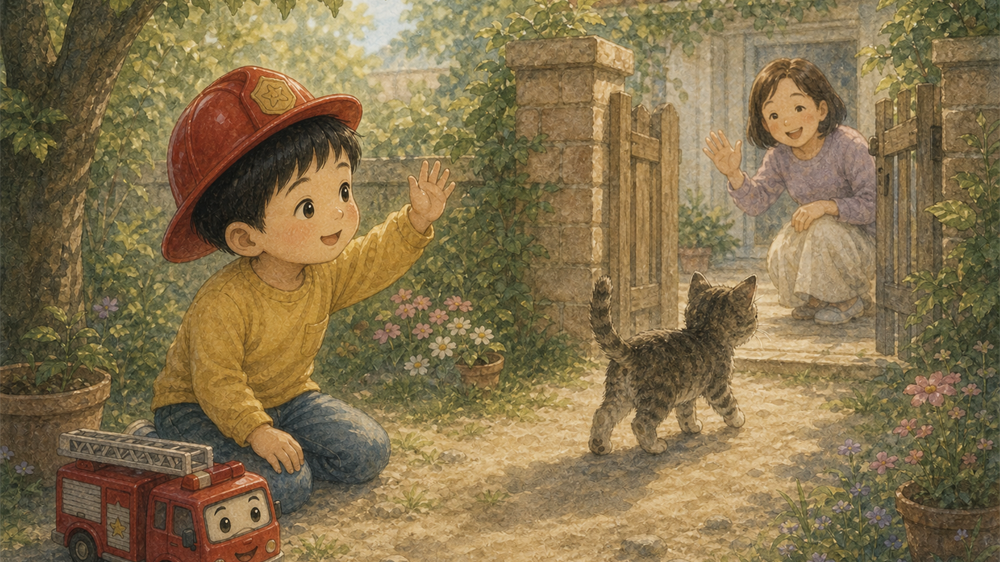
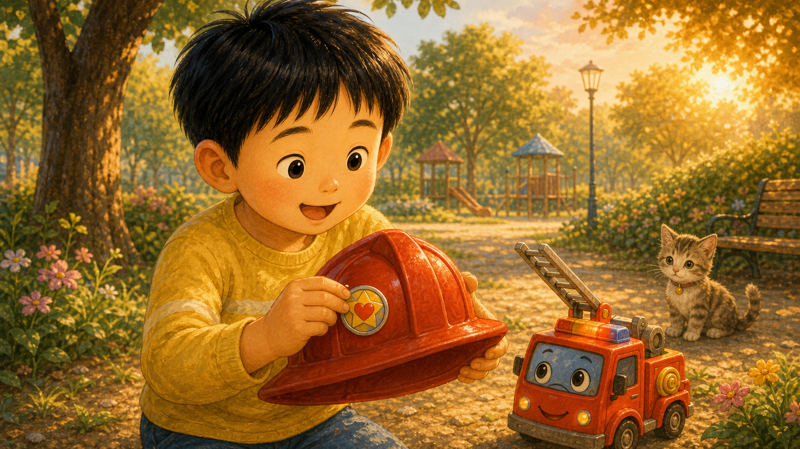
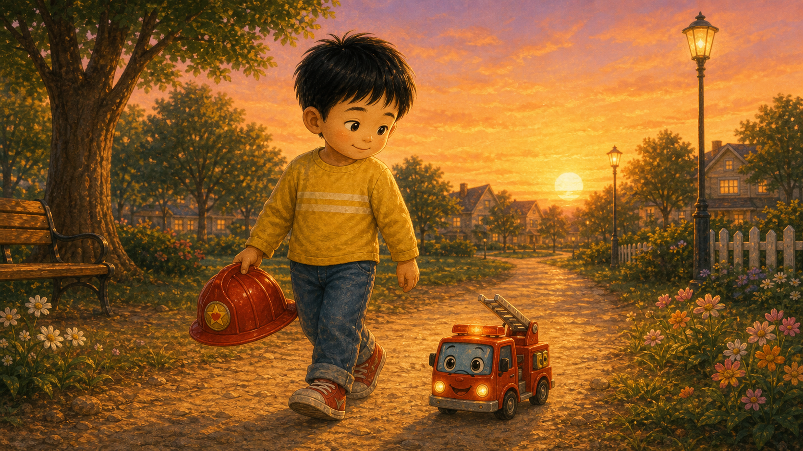
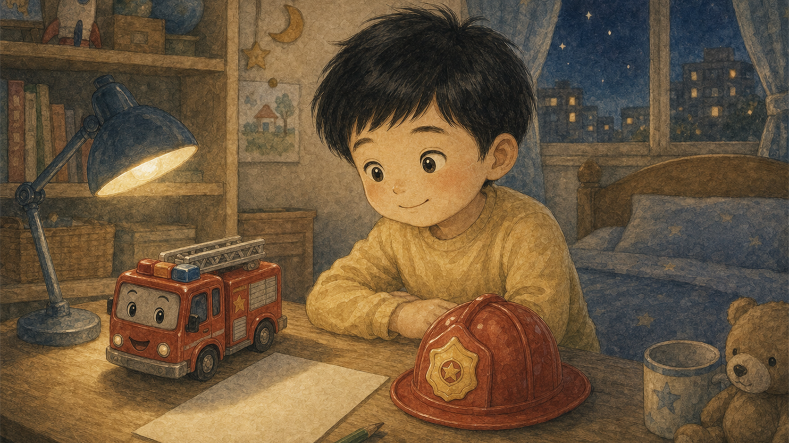

빨간 헬멧의 아침
민우는 장난감 소방 헬멧을 쓰고 공원으로 나갔어요. 나무 위에서 작은 고양이 울음소리가 들렸지요.
"작은 구조대가 왔어!"

민우는 장난감 소방 헬멧을 쓰고 공원으로 나갔어요. 나무 위에서 작은 고양이 울음소리가 들렸지요.
"작은 구조대가 왔어!"

민우의 작은 소방차 삐뽀가 반짝였어요. 사다리는 길지 않았지만, 도와주려는 마음은 아주 컸답니다.
민우는 먼저 고양이를 놀라게 하지 않기로 했어요.

민우는 낮은 가지 아래에 담요를 펼쳤어요. 혹시 고양이가 내려오다 놀라도 포근하게 받을 수 있게요.
용감함은 준비하는 마음에서 시작됐어요.

민우는 손뼉을 치지 않고 조용히 말했어요. "괜찮아, 천천히 내려와도 돼."
고양이의 떨리던 꼬리가 조금씩 편안해졌어요.

고양이는 살금살금 담요 위로 내려왔어요. 민우는 크게 소리치지 않고 따뜻하게 웃어 주었답니다.
삐뽀도 작은 불빛을 반짝이며 기뻐했어요.

민우는 고양이에게 작은 물그릇을 놓아 주었어요. 고양이는 물을 마시고 민우 옆에 얌전히 앉았지요.
돕는 일은 끝난 뒤 보살피는 것까지 이어졌어요.

고양이는 꽃밭 옆으로 걸어가다 뒤돌아보았어요. 민우와 삐뽀는 조용히 손을 흔들었답니다.
도와준 뒤에는 편히 갈 수 있게 기다려 주었어요.

민우는 헬멧에 작은 배지를 붙였어요. 오늘의 배지는 빠르게 달린 상이 아니라 차분히 도운 상이었지요.
민우는 그 배지가 아주 자랑스러웠어요.

해가 기울자 민우는 헬멧을 들고 집으로 걸어갔어요. 삐뽀는 옆에서 조용히 굴러갔답니다.
오늘 공원은 조금 더 따뜻해진 것 같았어요.

민우는 헬멧을 책상 위에 올려두었어요. 내일도 누군가 도움이 필요하면 먼저 살피기로 했지요.
가장 멋진 소방차는 따뜻한 마음으로 달리는 차였답니다.